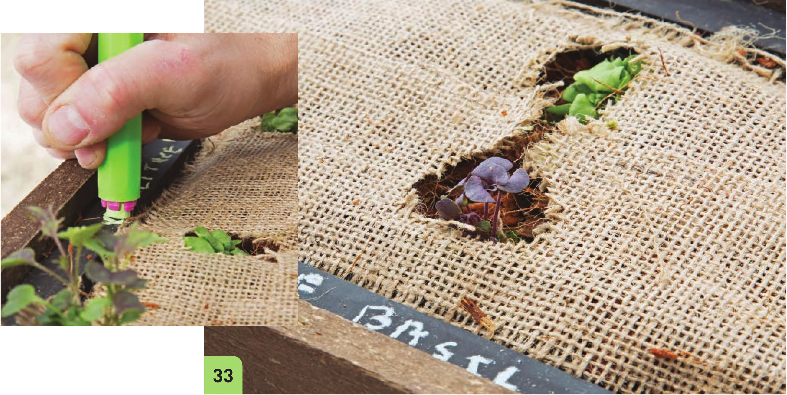

26 Cut a section of burlap large enough to cover the growing bed. This will be the fabric divider between the lower reservoir and the upper substrate. With very porous fabrics like burlap it is helpful to use multiple layers to prevent the upper substrate from entering the lower reservoir. 27 Push the burlap divider into the growing bed so it makes contact with the clay pellets. 28 Fill the growing bed with expanded coco chips. Fill to VC from the top of the liner. Planting and Decoration 29 Cut a section of burlap that covers the growing bed. 30 Use a couple staples to hold the burlap in place. 31 Cut an opening for the inlet pipe and cut away any excess burlap covering the rim of the bed. 32 Cut openings for transplants. 33 Transplant and label seedlings using chalk. 34 I mmediately water the garden from above after transplanting to make sure seedling roots make contact with the substrate. 35 For the first 2 weeks, water the garden from above every couple of days. Do not use the inlet pipe until the plants have the chance to send roots deep into the substrate to access water on their own. After a couple of weeks, the plants should be able to access the reservoir below and may not require waterings for a week or more depending on the environment. HYDROPONIC GROWING SYSTEMS 67
